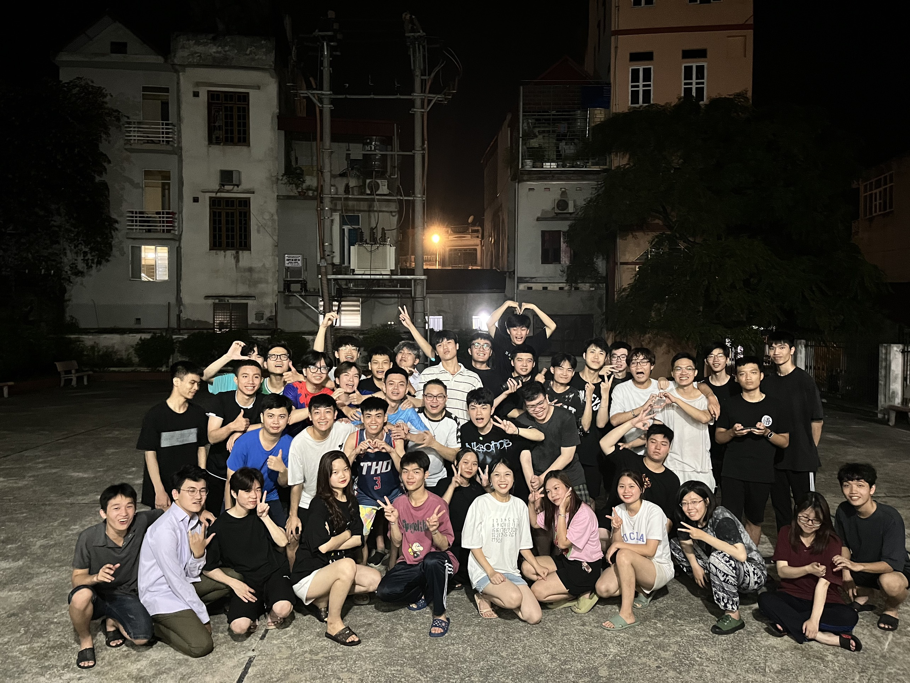

SOTA - Banking Academy
Đây là chuyến đi của tớ vào tháng 9/2023 và là chuyến đi thứ 2 của tớ trong năm 2023 và Đà Lạt đã không làm tớ thất vọng
Suy nghĩ đầu tiên về SOTA là bọn mình phải đi 2 tuần
nghĩ trong đầu kiểu 2 tuần sống chung với những
người mà mình chưa quen bao giờ chắc sẽ chán lắm,
lại còn phải dậy từ 5h sáng xong 22h tối đi ngủ. Chỉ mong
mong nhanh hết 2 tuần để còn được về nhà. Mình vẫn
nhớ như in là buổi tối trước khi đi có chung kết C1
, mọi người thức đêm để xem nên buổi sáng di chuyển đến Sơn
Tây trong tâm thế khá là "buồn ngủ"
Đến Sơn Tây thì chúng tớ ở khu B, việc đầu tiên là chia phòng
sau đó là chia các trung đội, tiểu đội, sắp xếp đồ đạc, ăn trưa
và buổi chiều tối chúng tớ được nghỉ ngơi chưa phải đi học.
Cảm nhận chung của chúng tớ khi đến đây là nóng, do đi vào cuối tháng 5 đến
giữa tháng 6 nên thời tiết khá oi bức. Không có điều hòa, chỉ có cái quạt.
Nóng đến mức phải cởi áo xong r đi rửa cái khăn mặt bằng nước lạnh 5 phút
1 lần rồi quấn quanh cổ cho đỡ nóng. Điều kì diệu bắt đầu ở đây, bằng
một cách nào đấy buổi tối ở Sơn Tây có rất nhiều gió, đi ngủ
giữa cái trời mùa hè chỉ có cái quạt mà nằm ngủ 30 phút mơ được
hẳn 2 giấc.
Buổi chiều thì chùng mình được học một kĩ năng mới
đó là gấp chăn vuông, mà bọn mình gấp toàn ra hình gì í chứ
không ra được hình vuông. Mà bọn mình gấp 1 lần thôi để sáng thức dậy
đỡ phải gấp lại lần nữa.
Quay đi quay lại là đến tối rồi, được ăn suất cơm nhìn thì ít
nhưng no đến sáng mai luôn. Không hiểu sao ngày ăn 3 bữa cơm ở
đây nhìn thì ít nhưng mà lúc nào cũng no. Đi quân sự được trải
nghiệm cảm giác "Ngày ăn 3 bữa, quần áo mặc cả ngày, ngủ
có người canh" là như thế nào.
Mấy buổi đi học đầu tiên còn được ngồi trên giảng
đường có điều hòa. Được 2 buổi thì phải ra sân học. Vừa nắng vừa khát
nước, vừa buồn ngủ, vừa mỏi chân. Mấy hôm đầu chưa quen giấc nên ai
cũng uể oải. Lúc đấy chỉ muốn đi về nhà luôn thôi.
Thứ 7 và chủ nhật chúng mình được nghỉ nên vui lắm,
không phải đi học mấy đứa cùng lớp tụ họp lại cùng 1 phòng
hoặc xuống dưới sân chơi cùng với nhau : đá bóng, chơi cờ tướng,
đánh LOL, chơi ma sói, ăn chè. Làm mọi thứ cùng nhau mà không
cần đến Internet làm chúng tớ nhớ lại hồi còn bé chơi với
nhau vui lắm.
Sống cùng nhau thì chắc chắn không tránh khỏi được xích mích
và hiểu nhầm lẫn nhau. Chúng tớ cũng cãi nhau nhiều chứ tại đều
là những người mới gặp nhau không lâu nên có chút nghi ngờ về
tính cách của nhau.
Chúng tớ học được cách lắng nghe những lời nói của nhau,
Ở đây chúng tớ học được nhiều điều lắm. Giúp chúng tớ trưởng thành hơn
hiểu nhau hơn.
Nắng Sơn Tây - Mây Ba Vì “ câu nói mà trước khi đến
với SoTa, tớ đã được nghe rất nhiều lần, cũng thực
sự rất sợ không biết mình có thể hoàn thành khoá học
GDQPAN này không. Nhưng chúng tớ có lẽ đã hoàn thành
thực sự tốt
Chúng tớ đến với SoTa trong những ngày
tháng 5 rực rỡ nhất.
14 ngày ở đây không quá dài, cũng không phải quá ngắn, nhưng nó đủ để đọng lại rất nhiều kỉ niệm khó quên trong tớ về những thứ nơi đây
Đến với SoTa, tớ được làm quen, được nói chuyện nhiều hơn với những người bạn cùng lớp, cùng sinh hoạt với họ dưới mái nhà Đại đội 4, dưới cả những lúc tiết trời Sơn Tây thất thường nhất. Tớ đã được rèn luyện cho mình kỉ luật của quân đội, việc thực hiện từng chế độ sinh hoạt hàng ngày, trong tuần. Đến lúc thực sự quen rồi thì tớ phải chào tạm biệt nơi đây. Cảm ơn những người bạn cùng phòng của tớ, tớ thực sự không muốn khiến mình phải trở nên như vậy, nhưng cũng vì tớ muốn phòng mình được hoàn hảo nhất- nhưng tớ rất tự hào nhaaa. Cảm ơn vì đã cho tớ những kỉ niệm không thể nào quên được.Gửi đến cậu, người đã để lại trong tớ những cảm xúc lẫn lộn nhất, quá nhanh để tớ khẳng định cảm xúc này có phải là thật hay không. Chẳng biết từ khi nào mà tớ lại có cảm xúc đặt biệt với cậu như vậy, tớ không dám đối diện với cậu nhiều nữa, tớ cũng chỉ dám âm thầm quan sát từ xa thôi. Nhưng có lẽ điều gì ở SoTa thì hãy gửi lại SoTa thôi, gửi lại nơi đây bao nỗi suy tư thầm kín ấy
.Cuộc vui nào cũng sẽ tàn, chúng tớ phải tạm biệt SoTa rồi, cảm ơn SoTa vì những thứ mới mẻ và thật nhiều kỉ niệm đó
Tớ sẽ nhớ SoTa nhiều lắm .
Ở đây chúng tớ cũng phải đi trực đêm nữa. 2h sáng dậy
ngồi canh cửa, buồn ngủ dã man, không có wifi phải đầu
tư 4G để xem Netflix cho đỡ chán.
Có nhiều đứa lớp tớ nghịch ngu xong cũng bị phạt quét sân nữa.
Rồi cũng có những lúc đi ăn chè cùng nhau nè, có những bức
ảnh dìm của nhau. À ở đây còn được xem cả các bạn nữ khoa khác
xinh xắn biểu diễn văn nghệ nữa.
Nhắm mắt một cái đã đến ngày phải đi về rồi,
ai cũng tiếc nuối, muốn ở với nhau thêm vài ngày nữa bởi
đã quen với nhịp sống ở đây rồi.
Về nhà rồi vẫn nhớ tiếng chuông báo thức mỗi buổi sáng,
nằm trên giường ở nhà thấy lạ quá, nhìn cái điều hòa
thì lại nhớ những chiếc quạt ở SOTA. Không còn được
ngủ cùng nhau, thức dậy ăn sáng và tập thể dục với nhau.
Cũng không còn những buổi đi học dưới cái nắng 40ºC với nhau nữa.
Không còn những buổi đêm hát cho nhau nghe, "nhậu nhẹt" với nhau.
Dù thời gian ở SOTA ngắn ngủi nhưng kỉ niệm của mỗi người với
SOTA thì mãi mãi còn đó.